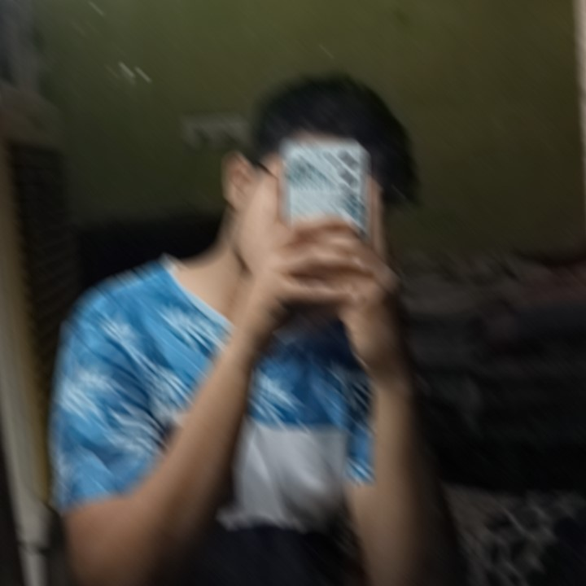

MOHAMMED MUBASHEER ALI
Intrduction :-
"Hello"
I am Mohammed mubasheer ali, a web developing with a deep enthusiasm for building web sites. With a background in BCA(bachelor's in computers application),
I've honed my skills mainly in full stacks font-end developer. whether i'm a positive minded person who always go throw the flow of life no matter whats going on,
Because i truely believe in allah.. Currrently i'm persuing BCA from dhruva degree clg and my aim is achieve success in here and after ,i dont care in which field i wil get my seccess.i only want
want my destiny.
Hobbies:-
my Hobbies are coding,playing X-box games llike god of war and COD..etc, mostly i like cooking,i like eating food and try new new dishes
. mostly i cook white italian pasta bcoz itz my fav food. i know how to cook pasta, biryani, mandi,bbq,fast food..etc.mostly i cook for my friends bcoz i like to eat with my friends with having fun and vibing togather rather then eating alone.
foods that i know to cook
1. white sause pasta (specail mostly cook)
3.chicken and mutton biryani(mostly beef)
8.lemon corainder maggi (cravings satisfing dish)
THANK YOU
HERE ARE MY SOCAIL MEDIA CLICK THE ICONS TO VISIT